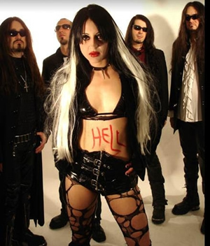
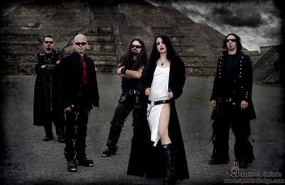

Em 1994, na cidade italiana de Roma, um grupo
de jovens músicos, dissidentes da banda Sepolcrum,
reuniam-se para dar início a um projeto que, além
da proposta musical, buscava uma identidade visual e cultural
com o mito dos vampiros. Para tanto, a banda foi batizada como
Theatres des Vampires, em alusão às citações
das obras da escritora norte-americana Anne Rice.
A primeira demo foi lançada em março
de 1995: Nosferatu, Eine Simphonie Des Grauens. Em dezembro
iniciaram-se os preparativos do álbum de estréia.
Entretanto, a banda enfrentou problemas quando o baterista abandonou
a formação no início das gravações.
Mas, no ano seguinte, foi lançado o primeiro álbum
oficial com o polêmico e sugestivo título Vampyrìsme,
nècrophilie, nècrosadisme, nècrophagie.
Este álbum traz nove faixas muito próximas do que
pode ser classificado como Black Metal. As músicas Ancient
Vampires, Woods of Valacchia e Vlad the Impaler
deixam claras as referências culturais nas quais a banda
se apóia.
Já
em 1999, já pela gravadora inglesa Plastichead,
o Theatres des Vampires lançou o segundo disco: The
Vampire Chronicles. Este álbum soa mais como uma continuidade
do primeiro trabalho sem acrescentar grandes inovações
e, sem, no entanto, soar repetitivo. Em Londres, o Theatres des
Vampires se apresentou no festival Vampyria III. No ano
seguinte, a banda já preparava o material de composição
do próximo álbum enquanto apresentava-se no famoso
festival Gods of Metal, na Itália.
Bloody Lunatic Asylum foi lançado
em 2001. Ao longo de suas 11 faixas já é possível
perceber os arranjos mais sofisticados e o aprimoramento instrumental
e vocal em relação aos primeiros discos. Este álbum
inclui, na tradicional temática vampírica adotada
pela banda, algumas referências ao satanismo, como nas músicas
Dances with Satan e Les litanies de Satan. Em
seguida foi lançado o EP Iubilaeum Anno Dracula
que contém sete faixas, sendo uma a versão "Club
Mix" de Dances with Satan.
Em 2002, o Theatres des Vampires enriqueceu sua
discografia com o álbum Suicide Vampire. Com oito
faixas e mais duas "Bonus Track", o álbum dá
seqüência à reformulação musical
iniciada no disco anterior. Suicide Vampire é mais melodioso
e menos agressivo que os primeiros trabalhos. A segunda faixa,
Lilith Mater Inferorum, recebe uma versão videoclipe.
No ano seguinte, Vampyrìsme é
lançado como uma releitura de Vampyrìsme, nècrophilie,
nècrosadisme, nècrophagie. Este disco traz
ainda quatro "Bonus Track" com a participação
de Valor Kand (Christian Death) e Gian Pyres (Cradle of Filth).
Neste momento, a banda já passa a ser classificada pela
imprensa especializada como Gothic Metal e faz uma turnê
européia ao lado de Christian Death. Em 2004, é
lançado promocionalmente um "boxset" com quatro
álbuns: The Vampire Chronicles, Bloody Lunatic Asylum,
Iubilaeum Anno Dracula e Suicide Vampire. Em maio
do mesmo ano, é lançado o quinto álbum oficial
e inédito.
Nightbreed of Macabria traz quinze faixas
e um bônus que podem ser caracterizadas como Gothic Metal;
sem, no entanto, abandonar a temática relacionada aos vampiros
e ao satanismo. Neste momento, um dos fundadores da banda, Lord
Vampyr, abandona a formação. Sonya Scarlet é
convidada para substituí-lo. Em seguida, a música
Angel of Lust ganha uma versão videoclipe.
As performances live da banda são teatrais
e dramáticas, destacando-se em festivais e turnês.
Durante os shows, Sonya Scarlet corta-se com uma navalha e oferece
o sangue ao público. Obviamente, esta prática passa
a ser proibida pelas autoridades por ser considerada um "estímulo
ao suicídio e a auto-mutilação".
No ano de 2005, a banda grava e lança o
álbum Pleasure and Pain. Nove faixas e dois bônus
compõem o sexto álbum oficial que ratifica a proposta
Gothic Metal e distancia-se cada vez mais do Black Metal dos anos
anteriores. No ano seguinte, é lançado o DVD The
Addiction Tour com apresentações ao vivo das
performances em Zagreb (Croácia), Londres, Praga e Berlin;
além de videoclipes e entrevistas.
Já
em 2007, o Theatres des Vampires presenteia os fãs com
um álbum duplo: Desire of Damnation. O primeiro
CD deste boxset traz apenas gravações ao vivo do
tipo "Greatest Hits"; enquanto que o segundo CD traz
algumas regravações e outras inéditas. A
faixa Bring me Back ganha uma versão videoclipe produzido
através da animação gráfica. Entre
agosto e setembro, a banda realiza uma turnê latino-americana.
A apresentação no Brasil ocorreu no dia oito deste
mesmo mês, em São Paulo. Em março de 2008,
a banda se apresentou em festivais na Itália e Rússia.
Enquanto isso, o próximo trabalho já estava em andamento.
Lançado em maio de 2008, Anima Noir
é o álbum mais recente da carreira do Theatres des
Vampires. O trabalho traz dez faixas, entre elas a música
Rain (originalmente gravada pelo The Cult) como
um de seus destaques. A produção demorou seis meses
e, segundo a própria banda "Anima Noir traz dez
faixas de puro vampirismo, letras românticas, vozes líricas,
guitarras e baterias poderosas. Todos os elementos do Theatres
des Vampires estão de volta nesta nova produção".
Atualmente, a formação da banda é Sonya Scarlet
(vocal), Fabian Varesi (teclados), Zimon Lijoi (baixo), Stephan
Benfante (guitarra) e Gabriel Valerio (bateria).
Em todos estes anos de carreira, o Theatres des
Vampires oscilou entre a agressividade e a violência do
Black Metal ao romantismo rebuscado do Gothic Metal, sendo classificada
até mesmo como "Vampiric Metal"; enquanto que
as letras abordam temas decadentes e românticos, buscando
referências em autores como Baudelaire
e Rimbaud. Neste período, vários músicos
participaram da formação, contribuindo para o crescimento
e amadurecimento musical. Mas, de qualquer forma, a banda não
perdeu suas referências originais. Pelo contrário,
a proposta musical foi fortalecida através da própria
temática adotada. Enquanto que a teatralização
das performances sobre o palco ajudou a ratificar e potencializar
sua identidade para que o Theatres des Vampires ocupe seu merecido
destaque no cenário do Metal.
Por
Spectrum